Retour à la page personnelle de Bernard Parisse.Chapitre 13 Exercices d’Analyse niveau licence 1 et 2
13.1 Le théorème de Villarceau
Dans ℝ3 rapporté à un repère orthonormé Oxyz, on considère C
le cercle de centre I=(0,a,0) et de rayon r (0<r<a).
-
Donnez l’équation paramétrique du tore T engendré par la rotation
de C autour de Oz. En déduire l’équation implicite de T.
- Soit P le plan passant par Ox et tangent à C en un point A de
cote postive. Déterminer l’intersection de P et T.
Le théorème de Villarceau dit que cette intersection est constituée
de 2 cercles symétriques par rapport à OA.
La solution
-
Un point N du cercle C tel que angle(Oy,OM)=t a
pour coordonnées : 0,rcos(t)+a,rsin(t).
Soit θ l’angle de rotation autour de Oz, N se transforme en M dans
cette rotation. La matrice R de cette rotation est :
| R= | ⎡
⎢
⎢
⎣ |
| | cos(θ) | −sin(θ) | 0 |
| sin(θ) | cos(θ) | 0 |
| 0 | 0 | 1 |
|
| ⎤
⎥
⎥
⎦ |
Donc les coordonnèes de M sont R*[0,rcos(t)+a,rsin(t)]:
−sin(θ)(rcos(t)+a),cos(θ)(rcos(t)+a),rsin(t).
L’équation paramétrique du tore T est donc :
x=−sin(θ)(rcos(t)+a),y=cos(θ)(rcos(t)+a),z=rsin(t) pour
t∈ [0;2π[ et θ∈ [0;2π[.
On peut aussi avoir l’équation implicite de T. On a :
x2+y2=(rcos(t)+a)2 donc rcos(t)=√x2+y2−a
x2+y2+z2=(rcos(t)+a)2+r2sin(t)2=r2+a2+2a*rcos(t)=
Donc l’équation implicite de T est :
x2+y2+z2=r2−a2+2a√x2+y2
comme a2−r2>0 on a x2+y2+z2−r2+a2>0 et 2a√x2+y2>0 cela
s’écrit aussi :
(x2+y2+z2−r2+a2)2=4a2(x2+y2)
- Le plus simple est de faire un changement de repère OXYZ en prenant :
OX=Ox
OY=OA
Si l’angle (Oy=OY=α
OZ est dans le plan Oyz et
l’angle (Oz=OZ=α.
On a : sin(α)=IA/OI=r/a et cos(α)=OA/OI=√a−r2/a.
La matrice B de changement de base est :
| B= | ⎡
⎢
⎢
⎣ |
| | 1 | 0 | 0 |
| 0 | cos(α) | −sin(α) |
| 0 | sin(α) | cos(α) |
|
| ⎤
⎥
⎥
⎦ |
et on a [x,y,z]=B*[X,Y,Z]
On tape :
B:=[[1,0,0],[0,cos(alpha),-sin(alpha)],[0,sin(alpha),cos(alpha)]]
B*[X,Y,Z]
On obtient les valeurs de [x,y,z] :
[X,Y*cos(alpha)-Z*sin(alpha),Y*sin(alpha)+Z*cos(alpha)]
Le plan P a donc pour équation Z=0.
Dans le repère OXY on a Z=0 donc :
X=x, y=Ycos(α)=Y√a−r2/a, z=Ysin(α)=Y*r/a
On utilise l’équation implicite de T pour avoir l’intersection de T et de
de P dans le repère OXY :
(x2+y2+z2−r2+a2)2=4a2(x2+y2) s’écrit :
(X2+Y2cos(α)2+Y2*sin(α)2−r2+a2)2=
4a2(X2+Y2cos(α)2)=4a2X2+4Y2(a−r2)
On simplifie :
(X2+Y2−r2+a2)2−4a2X2−4Y2(a2−r2)=0
On tape :
factor((X^2+Y^2-r^2+a^2)^2-4a^2*X^2-4Y^2*(a^2-r^2))
On obtient :
(X^2-2*X*r+Y^2+r^2-a^2)*(X^2+2*X*r+Y^2+r^2-a^2)
Donc l’intersection de T et de P est constituée de 2 cercles
d’équation dans le repère OXY :
X2−2*X*r+Y2+r2−a2=0 et X2+2*X*r+Y2+r2−a2=0
Ces équations s’écrivent aussi :
(X−r)2+Y2=a2 et (X+r)2+Y2=a2
Soient dans le repère Oxyz les points :
A1=(r−a,0,0), B1=(r+a,0,0, C1=−r−a,0,0, D1=(−r+a,0,0
Donc l’intersection de T et de P est constituée dans le plan P de
2 cercles qui passent par A et qui ont comme diamètre respectif A1B1 et
C1D1 : ils sont donc symétrique par rapport à OA.
Avec Xcas, pour a=2 et r=1, on tape :
T:=plotparam([-sin(u)*(cos(v)+2),cos(u)*(cos(v)+2),sin(v)],[u,v]):;
P:=plan(y-z*sqrt(3)=0);
PT:=inter(P,T,affichage=4+epaisseur_ligne_3);
On obtient :
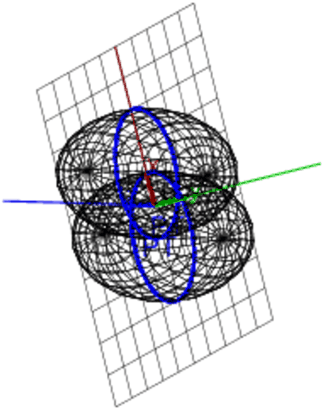
Avec Xcas, avec a et r comme paramètre, on tape :
supposons(a=[3.4,0,5,0.1]);
supposons(r=[1,0,a,0.1]);
T:=plotparam([-sin(u)*(r*cos(v)+a),cos(u)*(r*cos(v)+a),r*sin(v)],[u,v],ustep=0.3,vstep=0.3);
P:=plan(r*y-z*sqrt(a^2-r^2)=0);
PT:=inter(T,P,affichage=1+epaisseur_ligne_3)
plotimplicit((x-1)^2+y^2+z^2-4,x,y,z));
plotimplicit((x+1)^2+y^2+z^2-4,x,y,z));
13.2 Calculs d’aire et de de volume
13.2.1 Aire d’une couronne circulaire
Calculer l’aire d’une couronne circulaire de rayons r,R avec r<R.
Soient (Γ) le cercle de rayon R et (γ) celui de rayon r.
La réponse est simple et ne dépend que de la longueur 2l des cordes de
(Γ) tangentes à (γ) et on a :
13.2.2 Aire d’une calotte sphérique
Calculer l’aire d’une calotte sphérique découpée par un plan P
située à une distance d du centre O d’une sphère de rayon R.
On choisit comme l’origine du repère en O et l’axe des z perpendiculaire
au plan P et on pose :
z=√R2−x2−y2 donc
z′x=−x/2√R2−x2−y2
z′y=−y/2√R2−x2−y2
et dσ=√1+z′x2+z′y2dx dy=R/√R2−x2−y2 avec
(x,y)∈ D D etant la projection de la calotte sur 0x,Oy i.e disque d’équation x2+y2≤ R2−d2
Donc:
S=∫∫Ddσ=∫02π∫0R2−d2R/√R2−r2rdr
S=2π R(√R2−0−√R2−(R2−d2)=2π R(R−d)
Donc :
13.2.3 Aire latérale d’un tonneau qui est une sphére sans ses 2 calottes sphériques
D’après ce qui précéde , on a :
Aire d’une sphère : 4π R2
Aire des 2 calottes : 4π R(R−d)
L’aire latérale du tonneau est donc :
13.2.4 Volume d’une calotte sphérique
Calculer le volume d’une calotte sphérique découpée par un plan P
située à une distance d du centre O d’une sphère de rayon R.
On choisit comme l’origine du repère en O et l’axe des z perpendiculaire
au plan P et on pose :
x=rcos(t) donc dx=−rsin(t)dt+cos(t)dr
y=rsin(t) donc dy=rcos(t)dt+sin(t)dr
z=z donc dz=dz
donc dV==rdr.dt.dz
Donc
On tape :
int(1,t,0,2pi)*int(int(r,r,0,sqrt(R^2-z^2)),z,d,R)
On obtient :
2*pi*(-1/2*R^2*d-(-1)/6*d^3+1/3*R^3)
Donc :
Vc=2π(−1/2R2d+1/6d3+1/3R3)
Vc=π/3(2R3−3R2d+d3)
On tape : factor(2R^3-3R^2*d+d^3)
On obtient : (R-d)^2*(2*R+d)
Donc
13.2.5 Volume d’un tonneau qui est une sphére sans ses 2 calottes sphériques
D’après ce qui précéde , on a :
Volume d’une sphère : 4π R3/3
Volume des 2 calottes : 2π/3(2R3−3R2d+d3)
Le volume du tonneau est donc :
frac2π3d(3R2−d2)
13.2.6 Un calcul du volume d’une sphère percée
On fait un trou cylindrique dans une sphère de centre O et de rayon R,
l’axe du cylindre passe par O et le cylindre a comme hauteur 2*d.
Calculer le volume de cette sphère percée.
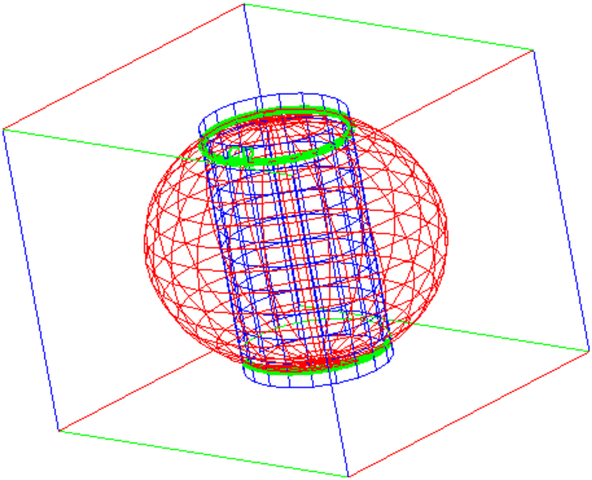
1ière méthode
On suppose que l’on sait qu’une une sphère de rayon R a pour volume :
et que le volume d’une calotte sphérique située à une distance d du
centre O d’une sphère de rayon R est :
Calculons le volume du trou qui est composé :
-
d’un cylindre de hauteur 2d et de rayon r=√R2−d2,
- de deux calottes sphériques situées à une distance d de O.
Donc d’après le calcul précédent :
On tape :
Vs:=4*pi*R^3/3
Vt:=2*pi*r^2*d+2*2*pi*(-1/2*R^2*d-(-1)/6*d^3+1/3*R^3)
simplify(subst(simplify(Vs-Vt),r^2,R^2-d^2))
On obtient :
(4*d^3*pi)/3
Donc la sphère trouée (en rouge) a le même volume qu’une sphère de
rayon d (en jaune) où 2d est la hauteur du cylindre (en bleu) :
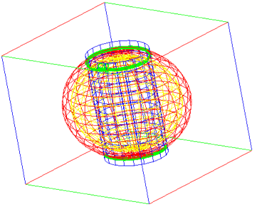
2ième méthode
On calcul le volume restant en coupant par des plans parallèles à Oxy.
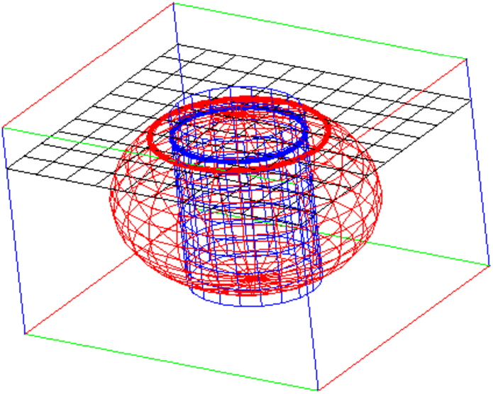
Un plan de cote z coupe le volume restant selon une couronne de rayons r et
Rz avec Rz=√R2−z2 et r=√R2−d2.
La surface de cette couronne est donc :
Sc=π(Rz2−r2)=π(R2−z2−(R2−d2)=π(d2−z2)
On a donc :
Vs−Vt=∫−ddπ(d2−z2)dz
On tape :
simplify(int(pi*(d^2-z^2),z,-d,d))
On obtient :
4/3*d^3*pi
Donc :
13.2.7 Les théorèmes de Guldin
Le premier théorème de Guldin
Soit AB un arc du plan Ox,Oy de longueur L et supposons que Ox ne
coupe pas l’arc AB.
Le centre de gravité G=xG,yG) de AB a pour coordonnées :
xG=∫ABxds/L
yG=∫AByds/L
avec si x(t),y(t) décrit AB on a ds2=dx2+dy2 et L=∫ABds
Théorème
En tournant autour de Ox l’arc AB engendre une surface de révolution dont
l’aire est :
Le second théorème de Guldin
Soit P une surface du plan Ox,Oy d’aire S et supposons que Ox ne
coupe pas la surface P.
Le centre de gravité G=xG,yG) de P a pour coordonnées :
xG=1/S∫∫Px dxdy
yG=1/S∫∫Py dxdy
avec S=∫∫P dxdy
Théorème
En tournant autour de Ox la surface D engendre un solide de révolution
dont le volume est :
Applications
Les applications sont de 2 sortes :
-
cela peut permettre de déterminer le centre de gravité G si l’aire
S (ou le volume V) est connu par exemple trouver le centre de gravité
d’un demi-disque,
- cela peut permettre de déterminer l’aire S (ou le volume V) si le
centre de gravité G est connu par exemple trouver la surface et le volume
d’un tore.
Surface et volume d’un tore :
Soit un tore T d’axe Δ et de rayons r1=a−r et r2=a+r avec a>r
(le cercle générateur a comme rayon r et la distance de son centre à Δ vaut a).
Donc T est engendré en faisant tourner autour de Ox par le cercle :
x=rsin(t),y=a+rcos(t) avec a>r et t∈ [0,2π].
L’ordonnée du centre de gravite du cercle est donc yG=a
Par le calcul on bien
yG=1/l/∫02π(a+rcos(t))*rdt=2*a*r/(2π r)=a.
Donc l’aire d’un tore de rayons r1=a−r r2=a+r (avec a>r) est :
S=(2π a)*(2π r)= 4π2*a*r)
comme a=(r1+r2)/2 et r=(r2−r1)/2 on a :
Le disque D a pour équation :
x=rsin(t),y=a+rcos(t) avec a>(r2−r1)/2, 0<r<((r2−r1)/2 et t∈ [0,2π].
En tournant autour de Ox, le disque D engendre un tore de rayons
r1=a−r et r2=a+r.
Le centre de gravité du disque D est le centre de D
donc :
yG=a et l’aire de D est S=r2,
donc le volume du tore est :
| V=2π yG π r2=2π2ar2=π2(r22−r12)(r2−r1)/4 |
13.2.8 La formule des 3 niveaux
Soit un solide de volume :
V=∫ab S(z) dz
où S(z) est la surface de la section par le plan de cote z.
Si S(z) est un polynôme en z de degré au plus 3 alors :
En effet :
si S(z)=zn on a :
In=∫ab S(z) dz=1/n+1(bn+1−an+1)
pour n=0 on a S(z)=1 donc on a I0=b−a=(b−a)/6(1+4*1+1)=(b−a)/6(S(a)+4S(a+b/2)+S(b))
pour n=1 on a S(z)=z donc on a I1=1/2(b2−a2)=(b−a)/6(a+4a+b/2)+b))=(b−a)/6(S(a)+4S(a+b/2)+S(b))
pour n=2 on a S(z)=z2 donc on a I2=1/3(b3−a3)=(b−a)/6(a+4a2+2ab+b2/4)+b2)=(b−a)/6(S(a)+4S(a+b/2)+S(b))
pour n=3 on a S(z)=z3 donc on a I3=1/4(b4−a4)=1/4(b−a)(a3+a2b+ab2+b3=(b−a)/6(a3+4S(a3+3a2b+3ab2+b3)/8)+b3)=(b−a)/6(S(a)+4S(a+b/2)+S(b))
Cette formule est en fait la formule de Simpson pour le calcul de l’aire sous une courbe, formule qui est exacte pour les polynômes de degré inférieur ou égal à 3.
Remarque 1
Dans le commerce les flacons ont souvent la taille fine : c’est pour les avoir
bien en main mais aussi pour donner aussi l’illusion d’un grand volume, puisque
la section médiane compte 4 fois !!!
Remarque 2
On peut avoir facilement le volume du tonneau (sphère sans ses 2 calottes car S(z)=π(R2−z2) :
V=2d/6(π(R2−d2)+4π R2+π(R2−d2))=π/3d(6R2−2d2)
On retrouve bien ;
13.3 La moyenne arithmétique, géométrique et harmonique
13.3.1 La définition
Soient a1, a2...an, n réels positifs (n≥ 2) et on pose :
u=1/n(a1+a2+...+an)
v=(a1a2...an)1/n
n/w=1/a1+1/a2+....+1/a1
u est la moyenne arithmétique des nombres a1, a2...an.
v est la moyenne géométrique des nombres a1, a2...an.
w est la moyenne harmonique des nombres a1, a2...an.
Montrer que pour tout x>0 on a : ln(x) ≤ x−1
Montrer que : v≤ u (on utilisera l’inégalité précédente pour
x=ak/u et pour k=1..n).
En déduire que w≤ v
Dans quel cas a-t-on v=u ?
Dans quel cas a-t-on v=w ?
Applications
-
En prenant a1=1 et a2=x en déduire que :
2x/x+1 ≤ √x ≤ 1+x/2
On prend comme valeur approchée de √x , la moyenne arithmétique
des nombres 2x/x+1 et 1+x/2.
Évaluer la précision de cette approximation lorsque
1/2≤ x≤ 2 lorsque l’on sait que
1.414<√2.<1.415
- Montrer que pour tout n on a
(n!)1/n≤ 1+n/2.
Montrer que
1−1/x≤ ln(x)≤ x−1 et en déduire que :
∑k=1n1/k≤ 1+ln(n) et
n/1+ln(n)≤ (n!)1/n
Montrons que : v≤ u
pour cela montrons que : ln(v/u)≤ 0.
On a :
ln(v/u)=1/nln(a1a2...an)/u)=
1/n(ln(a1/u)+ln(a2/u)+...+ln(an/u))
Puisque ln(x)≤ x−1 pour tout x>0, on a :
ln(a1/u)≤ a1/u−1,
ln(a2/u)≤ a2/u−1, ...,
ln(an/u)≤ an/u−1
Donc
1/nln(a1a2...an/u) ≤ (a1+a2+...+an)/nu−1=0
Donc
v≤ u
Montrons que : w≤ v
D’après ce qui précéde en appliquant l’inégalité à
bk=1/ak on a :
1/(a1a2...an)1/n=1/v≤ 1/n(1/a1+1/a2+....+1/a1)=1/w
donc puisque v>0 et w>0 on en déduit que :
w≤ v.
Quand a-t-on u=v ?
Si x>0 et x≠ 1, on a ln(x)< x−1 et
ln(x)= x−1 si et seulement si x=1 donc
ln(v/u)=0 si et seulement si a1/u=1, ...., an/u=1
c’est à dire si a1=a2....=an.
Quand a-t-on w=v ?
Comme on a appliqué l’inégalité à
bk=1/ak on a :
w=v si et seulement si b1=b2=...=bn c’est à dire si a1=a2...=an.
Applications
-
En prenant a1=1 et a2=x on a :
u=1+x/2 , v=√x et 2/w=1+1/x donc
w=2x/x+1 et
2x/x+1≤ √x ≤ 1+x/2
On approche √x par x/x+1+1+x/4=x2+6x+1/4(x+1).
On cherche à évaluer h(x)=x2+6x+1/4(x+1)−√x
pour 1/2≤ x≤ 2.
Avec Xcas, on tape :
h(x):=(x^2+6x+1)/(4x+4)-sqrt(x)
g:=function_diff(h)
N:=numer(g(x))
On obtient :
x^2*sqrt(x)-2*x^2+2*x*sqrt(x)-4*x+5*sqrt(x)-2
On tape :
Nt:=subst(numer(g(x)),x=t^2)
On obtient :
t^4*t-2*t^4+2*t^2*t-4*t^2+5*t-2
On tape :
factor(Nt)
On obtient :
(t-1)^3*(t^2+t+2)
h a donc un minimum pout x=1.
On tape :
h(1)
On obtient :
0
On tape :
f(x):=(x^2+6x+1)/(4x+4)
f(2.),f(2.)-1.414
On obtient :
1.41666666667,0.00266666666664
On tape :
f(0.5),f(0.5)-1.414/2
On obtient :
0.708333333333,0.00133333333332
Donc pour 1/2≤ x≤ 2 on a :
0≤ h(x)<0.0027
La précision est donc de 2.7e−3.
On fait le calcul pour x=1.2 :
On tape :
f(1.2),sqrt(1.2)
On obtient :
1.09545454545,1.09544511501 - Montrer que pour tout n on a :
(n!)1/n≤ 1+n/2.
On pose a1=1,a2=2...an=n.
On a : 1+2+...n=n(1+n)/2 donc u=1+n/2 et v=(n!)1/n
donc :
(n!)1/n≤ 1+n/2
Montrons que :
1−1/x≤ ln(x)≤ x−1
La fonction x−1−ln(x) a pour dérivée x−1/x. Elle admet donc
un minimum pour x=1 qui vaut 0 donc ln(x)≤ x−1 pour tout x>0
On a donc pour tout t>0, ln(t)≤ t−1.
On pose x=1/t donc −ln(x)≤1/x−1 c’est à dire
1−1/x≤ ln(x) pour tout x>0
Montrons par récurrence que :
∑k=1n1/k≤ 1+ln(n)
Pour n=1 on a 1≤ 1
n=2 on a 1/2= 1−1/2≤ ln(2) donc
1+1/2≤ 1+ln(2)
n=3 on a 1/3= 1−2/3≤ ln(3/2) donc
1+1/2+1/3≤ 1+ln(2)ln(3/2)=1+ln(3)
Si ∑k=1n1/k≤ 1+ln(n) est vraie pour n alors
puisque
1/n+1= 1−n/n+1≤ ln(n+1/n) on a
∑k=1n+11/k≤ 1+ln(n)+ln(n+1/n)=1+ln(n+1)
Donc l’inégalité ∑k=1n1/k≤ 1+ln(n)
est vraie pour tout n∈ ℕ.
Montrons que :
n/1+ln(n)≤ (n!)1/n
Pour ak=1/k , on a
(1/n!)1/n≤ 1/n(∑k=1n1/k)≤ 1+ln(n)/n donc
n/1+ln(n)≤ (n!)1/n
13.4 La moyenne arithmético-harmonique
13.4.1 La définition et l’énoncé
Soient a et b deux réels strictement positifs (dire pourquoi on peut
supposé dans la suite a>b ), on définit les 2 suites u et w par :
|
u0=a, w0=b, un+1= | | , wn+1= | |
(1) |
-
Montrer que wn≤ un pour tout n ∈ ℕ* ,
- Montrer que ces 2 suites sont adjacentes et qu’elles convergent vers
l=√ab
- Montrer que |un−l|<(un−1−l)2/2l
- Déterminer le premier n tel que |un−wn|<10−10 lorsque a=2
et b=1
- Calculer √2 avec une précision de 10−10.
-
On montre par récurrence que pour tout n∈ ℕ on a :
un>0, wn>0 et un+1wn+1=unwn=...u0w0
- Montrons que wn≤ un pour tout n∈ ℕ*
un+1−wn+1=un+wn/2−2unwn/un+wn
Avec Xcas, on tape :
factor((a+b)/2-2a*b/(a+b))
On obtient : ((a-b)^2)/(2*(a+b))
Donc tout n∈ ℕ on a :
un+1−wn+1=(un−wn)2/2(un+wn)≥ 0
donc pour tout n≥ 1 u1≥ w1 et si on échange les valeurs de u0
et de w0 on obtient les mêmes valeurs pour u1 et w1
et c’est pourquoi on peut supposer dans la suite u0=a>w0=b
- Montrons que u est décroissante :
un+1−un=(wn−un)/2≤ 0 puisque wn≤ un
- Montrons que w est croissante :
wn=w0u0/un puisque u est positive et décroissante et que w0u0>0 on en déduit que w est croissante.
- Montrons que u et w sont adjacentes.
On a donc :
w0≤ w1≤...wn≤ wn+1 ≤ un+1≤ un ≤...u1
u est décroissante et minorée donc est convergente.
w est croissante et majorée donc est convergente.
Les suites u et v sont donc convergentes et puisque
un+1=un+wn/2 par passage à la limite on en
déduit qu’elles convergent vers la même limite notée l.
Ou bien, on remarque que :
un+1−wn+1<un+1−wn=un+wn/2−wn=un−wn/2
Donc 0<un−wn<u0−w0/2n
On a donc montré que u et w sont adjacentes : elles convergent donc vers
la même limite l qui vérifie 0<b≤ l≤ a et l2=u0w0 puisque
pour tout n∈ ℕ unwn=u0w0.
donc l=√u0w0
- wn−1=l2/un−1 donc
un−l=un−1+wn−1−2l/2=un−12+l2−2lun−1/2un−1=(un−1−l)2/2un−1
Pour b=1 et a=2 on a u1=3/2=1.5 donc 0<u1−l ≤ 0.1
On a 0<u2−l≤ 10−2/(2l)
0<u3−l≤ 10−4/(23l3)
0<u4−l≤ 10−8/(27l7)
On sait que l2=2 donc 27*l7=210l>103 donc
0<u4−l≤ 10−10.
On ouvre un niveau tableur dans Xcas (Alt+t).
On met :
dans B0 2.
dans B1 =(A0+B0)/2
Lorsque B1 est en surbrillance, on ouvre le menu
Edit->Remplir->Copier vers le bas du tableur pour copier la formule
contenue dans B1
On met :
dans A0 1.
dans A1 =A0*B0/(2*B1)
Lorsque A1 est en surbrillance, on ouvre le menu
Edit->Remplir->Copier vers le bas du tableur pour copier la formule
contenue dans A1
On met :
dans C0 =B0-C0
Lorsque C0 est en surbrillance, on ouvre le menu
Edit->Remplir->Copier vers le bas du tableur pour copier la formule
contenue dans C0
On obtient à la ligne 4 :
A4=1.41421356237, B4=1.41421356237, C4=3.29691829393e-12
On trouve à la ligne 4, avec 21 chiffres après la virgule :
A4=1.414213562371500186978, B4=1.414213562374689910627,
C4=0.3189723648649696666202e-11
et à partir de ligne 5 les colonnes A et B valent :
[[1.414213562373095048803]]
On tape : avec 21 chiffres après la virgule sqrt(2.)
On obtient : 1.414213562373095048801
- Remarque
La suite u peut être définie par :
u0=a
un=un−1+wn−1/2=un−12+ab/2un−1=1/2(un−1−ab/un−1)
Écrit sous cette forme on réconnait la suite d’itérés de la méthode
de Newton pour calculer √ab
13.5 La moyenne arithmético-géométrique
13.5.1 La définition et l’énoncé
Soient a et b deux réels strictement positifs (dire pourquoi on peut
supposé dans la suite a>b), on définit les 2 suites u et v par :
|
u0=a, v0=b, un+1= | | , vn+1= | √ | |
(2) |
-
Faire la constuction géométrique qui donne u1, v1 à partir de
u0=2, v0=1.
- Montrer que ces 2 suites sont adjacentes et convergent donc vers
une limite commune notée M(a,b) est par définition la moyenne
arithmético-géométrique de a et b
- Déterminer le premier n tel que abs(un−vn)<10−20 lorsque a=2
et b=1
- Calculer M(2,1) avec une précision de 10−20.
-
On obtient :
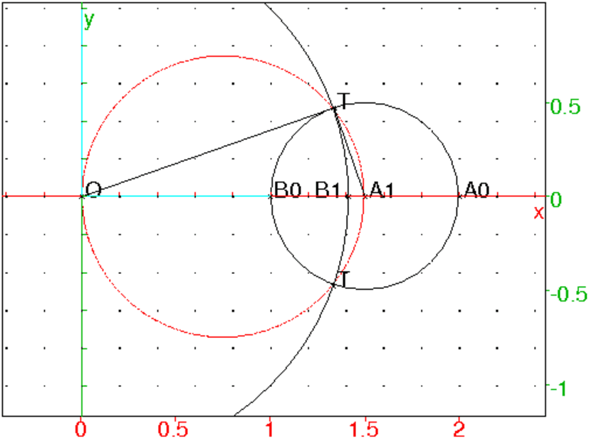
lorsqu’on tape :
O:=point(0);
A0:=point(2);
B0:=point(1);
A1:=milieu(A0,B0);
C:=cercle(A0,B0):;C
c:=cercle(point(0),A1):;affichage(c,1+ligne_tiret);
T:=inter(c,C);
k:=cercle(O,T[1]-O):;k;
B1:=inter_unique(segment(A0,B0),k,affichage=quadrant2);
On a : OT2=OB12=OB0× OA0=ab
- un+1−vn+1=un+vn−2√unvn /2=(√un−√vn)2/2≥ 0
donc pour tout entier n>0, un≥ vn
- un+1−un=vn−un/2≤ 0
La suite u est donc décroissante
- vn+1−vn=√unvn−vn≥ √vnvn−vn=0
La suite v est donc croissante
Les suites u et v sont donc convergentes et puisque
un+1=un+vn/2 par passage à la limite on en
déduit qu’elles convergent vers la même limite notée M(a,b).
Ou bien, on remarque que :
un+1−vn+1<un+1−vn=un+vn/2−vn=un−vn/2
)
Donc 0<un−vn<u0−v0/2n
On remarque que :
√ab≤ M(a,b)=M(b,a)≤ a+b/2 et
pour tout k>0 on a M(k*a,k*b)=k*M(a,b)
On peut donc supposer b=1 et a>1.
On a aussi pour tout entier n>0 :
√ab≤ vn≤ un ≤ a+b/2
un+12−vn+12=(un−vn)2/4 donc
un+1−vn+1=(un−vn)2/4(un+1+vn+1)≤ K(un−vn)2 avec
K=1/8√ab.
On a :
K<9*10−2
u1=1.5, v1=√2 donc 0<u1−v1< 9*10−2
u2−v2<(9*10−2)3<8*10−4
u3−v3<(9*10−2)7<5*10−8
u4−v4<(9*10−2)24−1<3*10−16
u5−v5<(9*10−2)25−1<4*10−33
On fait les calculs soit avec un tableur, soit avec un programme.
-
On ouvre un tableur pour calculer M(2,1) et on trouve que :
u5=v5=1.456791031046906869186431
Avec Digits:=34 on a :
v5=1.4567910310469068691864323832650814 et
u5=1.4567910310469068691864323832650824
- On ouvre un éditeur de programme et on tape :
aritgeo(a,b,eps):={
local n,u,v,u0;
u:=a;
v:=b;
n:=0;
tantque u-v>eps faire
u0:=u;
u:=(u+v)/2;
v:=sqrt(u0*v)
n:=n+1;
ftantque;
print(n);
return u;
}:;
On tape :
aritgeo(2,1.,1e-20)
On obtient :
1.456791031046906869186431,5
On peut tracer la fonction aritgeo(x,1.,1e-2)[0], pour cela on tape (on
commente print(n) dans aritgeo) :
plotaritgeo(n):={
local j,L;
L:=point(0);
pour j de 0 jusque n faire
L:=L,point(j+i*aritgeo(j,1.,1e-2));
fpour;
retourne L;}:;
13.5.3 Relation entre M(a,b) et les intégrales elliptiques
Il se trouve que la convergence est très rapide. Le calcul de cette limite
en fonction de a et b n’est pas trivial au premier abord. Il est relié
aux intégrales elliptiques, plus précisément on peut construire une
intégrale dépendant de deux paramètres a et b et qui est invariante
par la transformation F(x,y)=a+b/2,√ab :
On a en effet
On pose alors
où t → u est une bijection croissante de t∈]0,+∞[ vers
u ∈ ]−∞,+∞[, donc
| = | | ∫ | | | | dt/2(1+ab/t2) |
|
| |
| (( | | )2+1/4(t−ab/t)2)(ab+1/4(t−ab/t)2) |
|
|
|
|
|
| | = | |
|
Lorsqu’on est à la limite l=M(a,b), le calcul de I(l,l) est explicite
donc
On peut transformer I(a,b) en posant t=bu
Puis en posant u=tan(x) (du=(1+u2) dx)
| I(a,b)= | | | ∫ | |
| | |
| 1+tan(x)2 |
|
| 1+(b/a)2tan(x)2 |
|
| dx |
et enfin en posant tan2(x)=sin(x)2/1−sin(x)2
Si on définit pour m<1
alors on peut calculer K en fonction de I, en posant
m=1−b2/a2 soit b2/a2=1−m
Donc pour x et y positifs
et finalement
et si k2=1−m avec k∈ ]0,1]
13.5.4 Application : calcul efficace du logarithme.
On peut utiliser la moyenne arithmético-géométrique pour
calculer le logarithme efficacement, pour cela on cherche le développement
asymptotique de K(m) lorsque m tend vers 1.
Plus précisément, on montre que pour k<1/2 :
|
|K−ln | ⎛
⎜
⎜
⎝ | | ⎞
⎟
⎟
⎠ | |
≤ k2 | ⎛
⎜
⎜
⎜
⎜
⎝ | | + | |
+ | | + | |
− ( | | + | | ) ln(k) | ⎞
⎟
⎟
⎟
⎟
⎠ |
(4) |
que l’on peut réécrire
|
| | | −ln | ⎛
⎜
⎜
⎝ | | ⎞
⎟
⎟
⎠ | |
≤ k2(3.8−0.8ln(k))
(5) |
La formule (5)
permet de calculer le logarithme d’un réel positif
avec (presque) n bits
lorsque k ≤ 2−n/2 (ce à quoi on peut toujours se ramener
en calculant le logarithme d’une puissance 2m-ième de x ou
le logarithme de 2mx, en calculant au préalable ln(2)).
Par exemple, prenons k=2−27, on tape avec comme configuration 24 digits :
M(1,2^-27)=M1:=aritgeo(1,2^-27.,1e-20)
on trouve pour M1 (en 8 itérations puisque n=8):
0.7814414037633092672168387e-1
On a, avec une erreur inférieure à 19 × 2−54=1.1× 10−15
On peut donc déduire une valeur approchée de π de celle de ln(2).
Par exemple si on prend comme valeur de π :
3.141592653589793238462642
On obtient comme approximation de ln(2), π/58M1:
On tape evalf(pi)/(58*M1)
On obtient 0.6931471805599453185580364
alors que Xcas donne
comme valeur de ln(2),
0.6931471805599453094172324
On remarque que l’erreur est inférieure à 1.1× 10−15.
Si on veut calculer les deux simultanément, comme les relations entre ln
et π seront des équations homogènes, on est obligé
d’introduire une autre relation. Par exemple pour calculer une
valeur approchée de π on calcule la différence
ln(229+1)−ln(229) dont on connait le développement au premier
ordre, et on applique la formule de la moyenne arithmético-géométrique.
Il faut faire attention à la perte de précision lorsqu’on fait
la différence des deux logarithmes qui sont très proches, ainsi
on va perdre une trentaine de bits, il faut grosso modo calculer les
moyennes arithmético-géométrique avec
2 fois plus de chiffres significatifs.
L’intérêt de cet algorithme apparait lorsqu’on veut calculer
le logarithme avec beaucoup de précision, en raison de la
convergence quadratique de la moyenne arithmético-géométrique
(qui est nettement meilleure que la convergence linéaire
pour les développements en série, ou logarithmiquement
meilleure pour l’exponentielle), par contre elle n’est pas
performante si on ne veut qu’une dizaine de chiffres significatifs.
On peut alors calculer les autres
fonctions transcendantes usuelles, telle l’exponentielle,
à partir du logarithme, ou les fonctions trigonométriques
inverses (en utilisant des complexes) et directes.
On trouvera dans Brent-Zimmermann quelques considérations permettant
d’améliorer les constantes dans les temps de calcul par rapport
à cette méthode (cela nécessite d’introduire des fonctions
spéciales θ) et d’autres formules pour calculer π.
13.6 L’intégrale d’une fraction rationnelle
-
Calculer :
- En déduire :
Avec Xcas les réponses sont immédiates.
On tape :
integrate(t^2/(1-t^4),t)
On obtient :
1/-2*atan(t)+1/4*log(abs(t+1))+1/-4*log(abs(t-1))
On tape :
I:=integrate(sin(x)^2/(cos(2*x)),x)
On obtient :
(x/(-2*2)+(log(abs((tan(x/2))^2-2*tan(x/2)-1)))/8+
(log(abs((tan(x/2))^2+2*tan(x/2)-1)))/-8)*2
On tape :
lncollect(I-x/2))
On obtient :
-(1/4*log(abs((tan(x/2))^2+2*tan(x/2)-1)))
Mais comment détailler ?
-
Pour la question 1/, on décompose la fraction ratonnelle :
t2 dt /1−t4 en posant T=t2 :
On tape :
partfrac(T/(1-T^2))
On obtient :
1/(-2*(T+1))+1/(-2*(T-1))
soit :
1/-2*(t^2+1))+1/(-2*(t^2-1))
On tape :
partfrac(1/(-2*(t^2-1)))
On obtient :
1/(4*(t+1))+1/(-4*(t-1))
donc :
t^2/(1-t^4)=1/(t^2)+1/(4*(t+1))+1/(-4*(t-1))
On intègre chaque morceau pour obtenir (K étant une constante
arbitraire) :
-1/2*atan(t)+1/4*ln(abs((t+1)/(t-1)))+K
On a donc :
I:=-1/2*atan(t)+1/4*ln(abs((t+1)/(t-1)))+K
- Pour la question 2/, on transforme (sin(x)2/cos(2*x)).
On tape :
texpand(sin(x)^2/cos(2*x))
On obtient :
(sin(x))^2)/(2*cos(x)^2-1)
On tape :
trigtan((sin(x))^2)/(2*cos(x)^2-1))
On obtient :
(-((tan(x))^2))/((tan(x))^2-1)
On tape :
subst(quote(integrate((-((tan(x))^2))/ ((tan(x))^2-1),x)),x=atan(t))
On obtient :
integrate((-(t^2))/((t^2-1)*(1+t^2)),t)
c’est à dire l’intégale calculer en 1/.
On a donc :
-x/2+1/4*ln(abs((tan(x)+1)/(1-tan(x))))+K
J:=subst(I,t=tan(x))
13.7 Décomposition d’une fraction rationnelle et idendité de Bézout
On peut utiliser l’idendité de Bézout pour les polynômes pour trouver la
décomposition d’une fraction rationnelle.
Exemple 1
Donner le détail des calculs avec l’idendité de Bézout pour trouver la
décomposition de :
On tape :
On obtient :
On tape :
On obtient :
On tape :
On obtient :
13.8 Intégrale d’une fraction rationnelle et idendité de Bézout
Pour intégrer une fraction rationnelle on nous apprend qu’il faut
décomposer la fraction rationnelle en éléments simples. Pourtant un
logiciel de calcul formel procéde autrement quand le dénominateur a des
racines multiples : il utilise l’identité de Bézout.
Exemple 1
Intégrer x6+2/(x3+1)2
On cherche d’abord la partie entière qui est ici 1.
On tape :
normal((x^6+2)/(x^3+1)^2-1)
On obtient :
(-2*x^3+1)/(x^6+2*x^3+1)
On va calculer la primitive de N/P2 avec N=−2*x3+1 et P=x3+1.
On cherche U et V vérifiant UP+VP′=N puis on calcule :
∫N/P2=∫U/P+∫VP′/P2 en intégrant le 2ième terme par une intégration par parties. On a donc :
∫N/P2=−V/P+∫U+V′/P
On tape :
abcuv(x^3+1,3x^2,-2*x^3+1)
On obtient :
[1,-x]
Ici U+V′=0 donc ∫N/P2=x/x3+1
Donc :
∫x6+2/(x3+1)2=x+x/x3+1
Si on fait la décomposition de la fraction rationnelle, on doit intégrer :
1+1/3(x+1)2+−x+1/x2−x+1)2+1/−3(x2−x+1)
Exemple 2
Calculer ∫−x2+1/(x4+1)2
On va calculer la primitive de N/P2 avec N=−x2+1 et P=x4+1.
On cherche U et V vérifiant UP+VP′=N puis on calcule :
∫N/P2=∫U/P+∫VP′/P2 en intégrant le 2ième terme par une intégration par parties. On a donc :
∫N/P2=−V/P+∫U+V′/P
On tape :
abcuv(x^4+1,4x^3,-x^2+1)
On obtient :
[-x^2+1,(x^3-x)/4]
Donc :
∫−x2+1/(x4+1)2=−x3+x/x4+1+∫−x2+1+3x2/4−1/4/x4+1=−x3+x/x4+1+∫−x2+3/4x4+4.
Il reste à intégrer ∫−x2+3/x4+1 par la méthode classique
en décomposant cette fraction rationnelle.
On a:
−x2+3/x4+4=2x√2+3/2x2+2*x√2+2+−2x√2+3/2x2−2x√2+2
et on a :
int2x√2+3/2x2+2x√2+2=∫2x√2+2/2x2+2x√2+2+∫1/(x√2 +1)2+1
int2x√2+3/2x2+2x√2+2=√2*ln(x2+√2*x+1)/2+ atan (x√2 +1)/√2 et
en changeant x en −x :
int−2x√2+3/2x2−2x√2+2=√2*ln(x2−√2*x+1)/2+ atan (−x√2 +1)/√2
Finallement on a obtenu :
∫−x2+1/(x4+1)2=−x3+x/x4+1+1/4(2x√2+3/2x2+2*x√2+2+−2x√2+3/2x2−2x√2+2+√2*ln(x2−√2*x+1)/2+ atan (−x√2 +1)/√2)
On vérifie et on tape :
int((1-x^2)/(1+x^4)^2)
On obient :
((-(sqrt(2)))*ln(x^2+(-(sqrt(2)))*x+1))/8+(sqrt(2)*atan(sqrt(2)*x-1))/8+(sqrt(2)*ln(x^2+sqrt(2)*x+1))/8+(sqrt(2)*atan(sqrt(2)*x+1))/8+(-x^3+x)/(4*(x^4+1))
13.9 Intégrale et série
1/ On considère la suite un=∑j=1n 1/j2 pour
n>0.
Montrer que un converge en comparant un à l’intégrale
∫1n+1 1/t2 dt.
2/ a/ Soit a>0. Montrer que la fonction f définie par :
f(x)=xa*ln(x) si x>0 et f(0)=0
est continue sur [0; +∞[
b/ Calculer ∫01 f(t) dt
3/ a/ Montrer que la fonction gn définie par :
gn(x)=x2n+1*ln(x)/x2−1 si x>0 et x≠ 1
peut se prolonger par continuité sur [0; +∞[
b/ On pose In=∫01 gn(t) dt.
Calculer In+1−In
c/ Montrer que In est convergente et déterminer sa limite.
En déduire la valeur de I0 en fonction de la limite de un.
Correction
1/ Pour pour j>2 et pour t ∈ [j−1;j[ on a 1/j2 ≤ 1/t2 donc :
un=∑j=1n 1/j2=1+∑j=2n 1/j2<1+∫1n 1/t2dt
donc un<1−1/n+1=2−1/n
La suite un est croissante et majorée donc elle est convergente de limite
l et on a l ≤ 2.
2/ On tape :
assume(a>0);
limit(x^a*log(x),x=0)
On obtient :
0
On tape :
ibpu(x^a*log(x),log(x))
On obtient :
[(x^(a+1)*log(x))/(a+1),(-(x^(a+1)))/(a*x+x)]
On obtient :
-1/(a+1)^2
3/ On tape :
g(n,x):=(x^(2*n+1)*log(x))/(x^2-1)
limit(g(n,x),x=1)
On obtient :
1/2
On tape :
limit(g(n,x),x=0)
On obtient :
0
On tape :
lncollect(normal(g(n+1,x)-g(n,x)))
On obtient :
((x^(2*n+3)-x^(2*n+1))*log(x))/(x^2-1)
On tape :
int(x^(2*n+1)*log(x),x,0,1)
On obtient :
-1/(2*n+2)^2
On a pour 0≤ x ≤ 1:
0≤ gn(x)<x2*n/2 car x*log(x)/(x2−1)<1/2
Donc :
In+1−In=−1/4*1/(n+1)2
donc :
In=−1/4*un+I0
On a donc I0=l/4
13.10 Intégrales et changement de variables
On veut calculer :
Calcul de I1
On cherche le signe de cos(x−1)−sin(x).
On tape :
assume(x>0 and x<pi);solve(cos(x-1)-sin(x)>0,x)
On obtient :
x,[((x>0) and (x<((pi+2)/4)))]
Donc :
I1=∫0(π+2)/4cos(x−1)−sin(x)dx+
∫(π+2)/43sin(x)−cos(x−1)dx
I1=−cos(3)+cos((pi+2)/4)−sin(2)+sin((pi−2)/4)+
cos((pi+2)/4)+sin(1)+sin((pi−2)/4)−1
Donc :
I1=−cos(3)+2cos((pi+2)/4)−sin(2)+2sin((pi−2)/4)+sin(1)−1
On vérifie avec Xcas, on tape :
int(abs(sin(x)-cos(x-1)),x,0,3)
On obtient :
-cos(3)+2*cos((pi+2)/4)+sin(1)-sin(2)+2*sin((pi-2)/4)-1
Calcul de I2
On sait que :
sin(x)−cos(x)*√2/2=sin(x−π/4)
Donc :
I2=2/√(2)∫03|sin(x−π/4)−√2/2|dx
On pose t=x−π/4 et on obtient :
I2=2/√(2)∫−π/43−π/4|sin(t)−√2/2|dt
On cherche le signe de sin(t)−√2/2=sin(t)−sin(π/4)
Sur [−π/4,π/4] on a sin(t)−sin(π/4)≤ 0
Sur [π/4,3−π/4] on a sin(t)−sin(π/4)≥ 0 car
3*π/4>3−π/4>π/2
Donc
I2=2/√(2)∫−π/4π/4√2/2−sin(t)dt+
2/√(2)∫π/43−π/4sin(t)−√2/2dt
I2=π/2−2/√(2)cos(3−π/4)+1−(3−pi/2)
Donc :
I2=π−2/√(2)cos(3−π/4)−2=π−cos(3)−sin(3)−2
On vérifie avec Xcas, on tape :
int(abs(sin(x)-cos(x)-1),x,0,3)
On obtient :
-cos(3)-sin(3)+pi-2
13.11 Intégrales et intégration par parties
On veut calculer pour n ∈ ℕ :
-
En intégrant par partie In trouver une relation de récurrence
entre In et In−2.
- Calculer I0 et I1.
- En déduire la valeur de In.
- Application :
Calculer I=∫02πsin(x)16cos(2x)dx.
- Vérifier le calcul précédent avec Xcas.
-
on pose u=sin(x)n−1 et dv=sin(x) donc
du=(n−1)sin(x)n−2cos(x) et v=−cos(x).
0n donc :
In=[−sin(x)n−1cos(x)]02π+int02π(n−1)sin(x)n−2cos(x)2
In=0+int02π(n−1)sin(x)n−2(1−sin(x)2)=(n−1)In−2−(n−1)In
On a donc :
Avec Xcas on utilise ibpu (en indiquant la valeur de u) ou
ibpdv (en indiquant la valeur de v) et trigsin pour
transformer cos(x)2 en 1−sin(x)2 et on tape:
assume(n,integer)
expand(trigsin(ibpu(sin(x)^(n-1)*sin(x),sin(x)^(n-1),x,0,2*pi)))
On obtient :
[0,-n*sin(x)^n-sin(x)^(n-2)+n*sin(x)^(n-2)+sin(x)^n]
ou on tape
expand(trigsin(ibpdv(sin(x)^(n-1)*sin(x),-cos(x),x,0,2*pi)))
On obtient :
[0,-n*sin(x)^n-sin(x)^(n-2)+n*sin(x)^(n-2)+sin(x)^n]
On retrouve donc le résultat précédent :
In=0+(n−1)In−2−(n−1)In
- Calcul de I0 :
I0=∫02πdx=2π
Calcul de I1 :
I1=∫02πsin(x)dx=0
Avec Xcas on tape:
int(1,x,0,2*pi),int(sin(x),x,0,2*pi)
On obtient :
2*pi,0
- Puisque nIn=(n−1)In−2 et que I1=0 on en déduit que si n=2p+1
on a :
I2p+1=0
Puisque nIn=(n−1)In−2 on a donc pour n=2p :
2p(2p−2)(2p−4)...2*I2p=(2p−1)(2p−3)(2p−5)...1*I0
en multipliant les 2 membres par 2p(2p−2)(2p−4)...2=2pp! on a :
(2pp!)2*I2p=(2p)!*I0=2π(2p)!
donc
et
- Calcul de I=∫02πsin(x)16cos(2x)dx
On a :
cos(2x)=cos(x)2−sin(x)2=1−2sin(x)2 donc
I=I16−2I18=I16−217/18I16=−8/9I16
I=−16π(16)!/9(288!)2=comb(16,8)−π/9*212
ifactor(comb(16,8))=ifactor(12870)=2*3^2*5*11*13=2*9*715
I=−715π/211=−715π/211=−715π/2048
donc
ou on tape :
normal(-16*pi*(16)!/(9*(2^8*8!)^2))
On obtient :
(-715*pi)/2048
- Avec Xcas on tape:
int(1,x,0,2*pi),int(sin(x),x,0,2*pi)
On obtient :
(-715*pi)/2048
Remarque Xcas effectue ce calcul en utilisant les résidus.
13.12 Approximation de π avec un tirage aléatoire dans un carré
On tire au hasard N points d’un carré de côté 2 et on compte le nombre
k de points qui se trouve dans le cercle inscrit dans ce carré.
Une valeur approché de π est alors 4*k/N (car le rapport des surfaces
cercle/carré est π/4∼ k/N.
On tape :
approxpi(N):={
local x1,y1,j,k;
ClrGraph();
randseed;
k:=0;
pour j de 1 jusque N faire
x1:=rand(-1,1);
y1:=rand(-1,1);
si x1^2+y1^2<1 alors k:=k+1;point(x1+i*y1,affichage=1+point_point);
sinon point(x1+i*y1,affichage=0+point_point);
fsi;
fpour
retourne evalf(4*k/N);
}:;
On tape :
approxpi(1000)
et on obtient :
3.076
On tape :
approxpi(10000)
On obtient (time : 0.97 si on a caché l’écran DispG avant de valider la commande) :
3.1136
On tape : approxpi(100000) et on obtient (time : 8.78) : 3.14596
et voici l’écran DispG correspondant à approxpi(100000):

13.13 Approximation de π avec les aiguilles de Buffon
Le naturaliste Buffon, en 1777 a posé le problème de l’aiguille en ces
termes : "Je suppose que dans une chambre, dont le parquet est simplement
divisé par des joints parallèles, on jette en l’air une baguette et que
l’un des joueurs parie que la baguette ne croisera aucune des parallèles du
parquet..."
On va chercher la probabilité que la baguette rencontre une des parallèles
lorsque la baguette a une longueur égale à la distance 2a entre deux
parallèles.
Considérons un repère orthonormé Oxy où Oy est parallèle à une
raie du parquet.
Soient d la distance du milieu M de la baguette à la raie la plus proche
(d=MN où N est la projection de M sur l’axe des y i.e. d est la
valeur absolue de l’abscisse de M) et t l’angle que fait la baguette avec
Ox avec t∈ [0;π[.
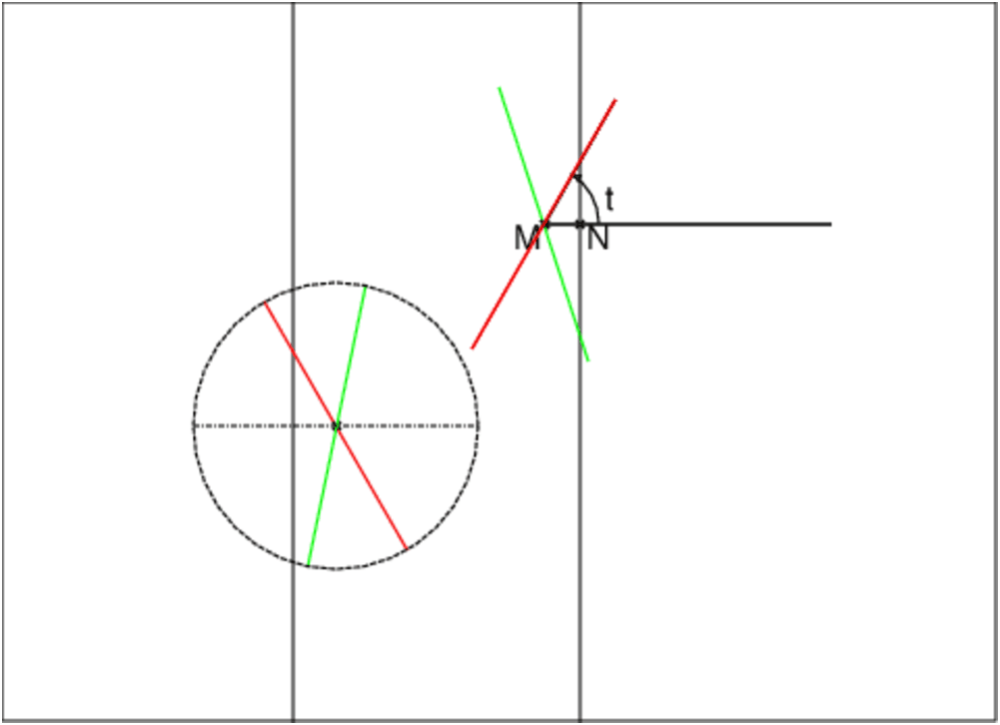.
La baguette ne rencontrera pas l’une des raies si
−d≤ acos(t) ≤ d ou si
0≤ a|cos(t)| ≤ d
et la baguette rencontrera l’une des raies si
d≤ a|cos(t)|.
On suppose a=1 et on tire au hasard d entre 0 et 1 et t entre 0 et π.
On trace la courbe représentative de y=|cos(t)| pour 0≤ t ≤ π
ainsi que la région (en noire) qui représente l’événement :
"la baguette coupe une raie".
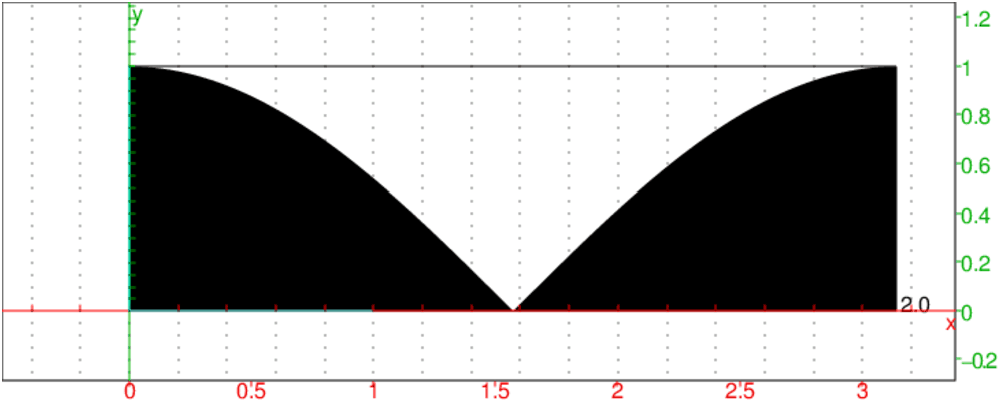
La probabilité pour que la baguette coupe une raie est donc égale au
quotient de l’aire en noire égale à ∫0π|cos(t)| dt=2 par l’aire
du rectangle [0;π]X[0;1] égale à π. Donc :
Pour faire le programme de simulation avec Xcas, on ne va pas utiliser
π dans rand(0,pi) puisque justement on cherche à avoir une
estimation de π. Donc il faut trouver un moyen pour choisir t
aléatoirement dans [0:π[ : pour cela on va tirer au hasard un point
M=x+iy dans le demi-cercle z=eit pour t=0..π : l’angle
Ox,OM sera la valeur de t et cos(t)
sera égal à x/√x2+y2.
On tape pour avoir une approximation de π :
buffon(n):={
local d,cost,x,y,j,k;
randseed;
k:=0;
pour j de 1 jusque n faire
d:=rand(0,1);
repeter
x:=rand(-1,1);
y:=rand(0,1);
jusqua x^2+y^2<1 et x^2+y^2>0 ;
cost:=x/sqrt(x^2+y^2);
si abs(cost)>d alors k:=k+1; fsi;
fpour
retourne evalf(2*n/k);
}:;
On tape :
buffon(10000)
On obtient :
3.15109500551
On tape :
buffon(100000)
On obtient :
3.14065419827
Le temps mis pour effectuer ce programme est long et l’approximation de π
par ce programme n’est pas plus précise que celle obtenue par le
programme précédent qui consiste a faire une approximation de π par un
tirage aléatoire dans un carré puisque c’est ce que l’on fait pour avoir la
valeur aléatoire de t dans [0;π[.
Remarques
Pour tirer au hasard un point dans le cercle unité il ne faut pas écrire :
x:=alea(-1,1);
c:=sqrt(1-x^2);
y:=alea(0,c);
M:=point(x+i*y)
ni écrire
x:=rand(-1,1);
repeter
y:=rand(0,1);
jusqua x^2+y^2<1
M:=point(x+i*y)
car x et y ne sont pas indépendants et cela entraine que les points M
ne sont pas équirépartis dans le disque de centre 0 et de rayon 1.
ni écrire
r:=alea(-1,1);
t:=alea(0,pi);
M:=point(r*exp(t*i))
car ici aussi les points M ne sont pas équirépartis dans le disque de
centre 0 et de rayon 1.
Il faut écrire :
repeter
x:=rand(-1,1);
y:=rand(0,1);
jusqua x^2+y^2<1
M:=point(x+i*y)
Pour se convaincre on tape :
simul(n):={
local j,a,b,L;
L:=NULL;
pour j de 1 jusque n faire
repeter
a:=alea(-1,1);
b:=alea(-1,1);
jusqua a^2+b^2<1;
L:=L,point(a+i*b);
fpour
retourne affichage(L,point_point);
}:;
simul0(n):={
local j,a,b,c,L;
L:=NULL;
pour j de 1 jusque n faire
a:=alea(-1,1);
c:=sqrt(1-a^2);
b:=alea(-c,c);
L:=L,point(a+i*b);
fpour
retourne affichage(L,point_point);
}
:;
simul1(n):={
local j,a,b,L;
L:=NULL;
pour j de 1 jusque n faire
a:=alea(-1,1);
repeter
b:=alea(-1,1);
jusqua a^2+b^2<1;
L:=L,point(a+i*b);
fpour
retourne affichage(L,point_point);
}:;
simul2(n):={
local j,r,t,L;
L:=NULL;
pour j de 1 jusque n faire
r:=alea(-1,1);
t:=alea(0,pi);
L:=L,point(r*exp(i*t));
fpour
retourne affichage(L,point_point);
}
:;
Puis, on tape :
simul(10000);
On obtient :
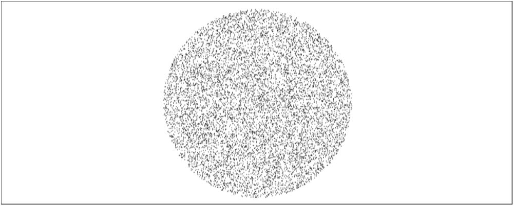
On remarque que les points sont équirépartis.
Puis, on tape :
simul0(10000)
On obtient :
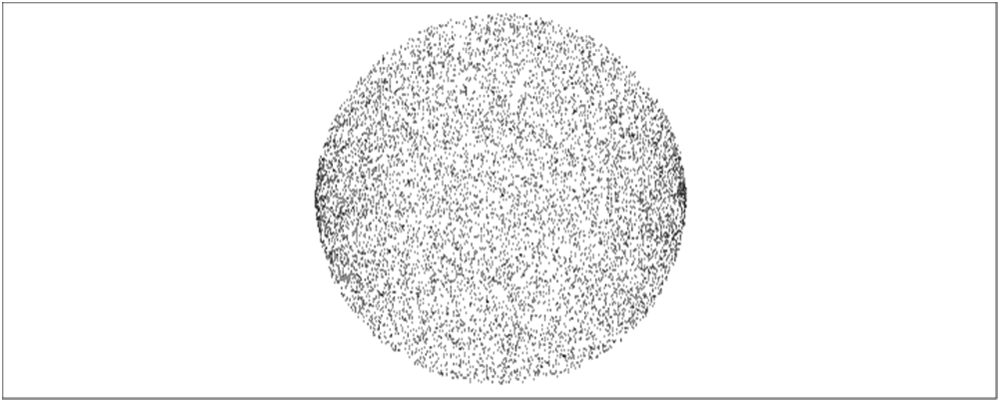
On remarque l’accumulation de points dans les
secteurs −1<x<−0.9 et 0.9<x<1
Puis, on tape :
simul1(10000)
On obtient :
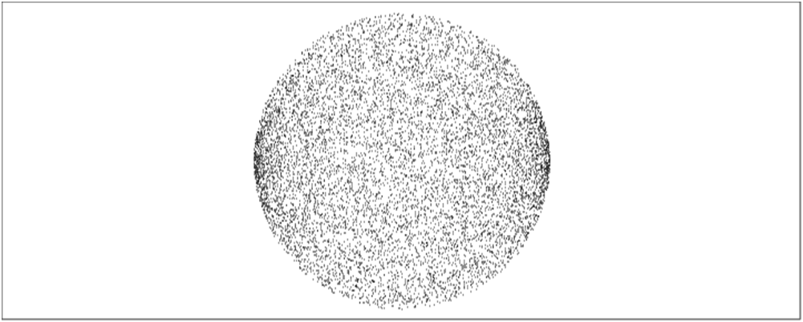
On remarque encore l’accumulation de points dans les
secteurs −1<x<−0.9 et 0.9<x<1
Puis, on tape :
simul2(10000)
On obtient :
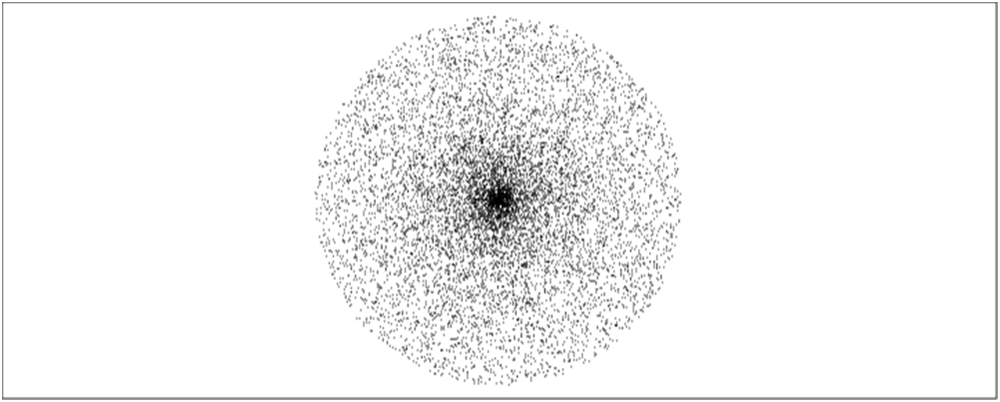
On remarque l’accumulation des points au centre.
13.14 Approximation décimale d’un nombre transcendant
Définition Un nombre réel est algébrique s’il vérifie une
équation polynômiale à coefficients entiers, sinon il est transcendant.
On peut montrer que pour b ∈ ℤ, b>1, les nombres :
sont transcendants.
Donner une approximation déciamle de ξ(2) à
10−8 près.
La série de terme générale 1/bn! est convergente car
1/bn!<1/bn, donc :
1+1/b<ξ(b)<b/b−1 et 1.5<ξ(b)<2.
Pour avoir une approximation décimale de ξ(2) à
10−8 près, il faut trouver une majoration du reste d’ordre p≥ 1 :
| | =
| | + | | + | | +...+ | | 1 |
|
| bp!*((p+1)(p+2)...(p+n) |
| +...< |
Il faut donc résoudre :
Pour p=5 on a 1/2120−1<10−36
Pour p=4 on a 1/224−1<6*10−8
Donc il suffit de calculer la somme des 5 premiers termes (p=0..4)) :
1+1/2++1/22+1/26+1/224.
On trouve :
1.7656250596
13.15 Série et développement en série de Fourier
L’énoncé
-
Trouver pour x∈]−π;π] la valeur de la somme
- En déduire que pour x∈]−π;π[ la somme
s’écrit sous la forme 1/2+1/NI(x)+1/N+1J(x) où I(x) et J(x) sont des intégrales fonction de leur borne supérieure.
- En déduire, lorsque x∈[−π;π], la valeur de :
.
La correction avec Xcas
-
Première méthode
On remarque s(x,N) est la partie réelle de ∑k=1Nexp(ix).
On tape :
sum(exp(i*k*x),k,1,N)
On obtient :
(exp((i)*(N+1)*x))/(exp((i)*x)-1)-(exp((i)*x))/ (exp((i)*x)-1)
On tape :
trigcos(re(sum(exp(i*k*x),k,1,N)))
On obtient :
(-cos(x)*cos(x*(N+1))-cos(x)+cos(x*(N+1))- sin(x)*sin(x*(N+1))+1)/(2*cos(x)-2)
On réécrit la réponse avec tlin puis avec normal et on
obtient :
(-cos(x)-cos(N*x)+cos(x*(N+1))+1)/(2*cos(x)-2)
donc
| s(x,N)= | | (−cos(x)−cos(N*x)+cos(x*(N+1))+1) |
|
| (2*cos(x)−2) |
|
Autre méthode
On peut aussi simplifier : 2*sin(x/2)*s(x,N).
On tape :
tlin(2*sin(x/2)*cos(k*x))
On obtient :
sin((2*k*x+x)/2)-sin((2*k*x-x)/2)
Donc on a :
| sin((2kx+x)/2)−sin((2kx−x)/2)=sin((2Nx+x)/2)−sin(x/2) |
et
| 2sin(x/2)*s(x,N)= | | 2sin(x/2)cos(kx)=sin((2Nx+x)/2)−sin(x/2) |
On vérifie et on tape:
tlin(2*sin(x/2)*(-sin(x/2)+sin((2*N+1)*x/2)))
On obtient :
-1+cos(x)+cos(N*x)-cos(N*x+x)
On tape:
trigsin(trigexpand(2*cos(2*(x/2))-2))
On obtient :
-4*sin(x/2)^2
On tape:
tlin((2*cos((N+1)*x/2)*sin(N*x/2)))
On obtient :
sin((2*N*x+x)/2)-sin(x/2)
Donc on peut écrire s(x,N) de 4 manières :
| s(x,N)= | | cos(kx)= | | sin((2N+1)x/2)−sin(x/2) |
|
| 2sin(x/2) |
| = |
| 2cos((N+1)x/2)sin(Nx/2)) |
|
| 2sin(x/2) |
| = | | −1+cos(x)+cos(Nx)−cos((N+1)x) |
|
| −4sin2(x/2) |
| = |
| 1−cos(x)−cos(Nx)+cos((N+1)x) |
|
| 2*cos(x)−2) |
|
- On remarque que :
| S′(x,N)= | | (−1)k+1cos(kx)=− | | cos(k(x+π))=−s(x+π,N) |
donc
| S′(x,N)= | | cos(x)−(−1)Ncos(N*x)+(−1)N+1cos(x*(N+1))+1 |
|
| 2+2cos(x) |
|
On a :
| S′(x,N)− | | = | | −(−1)Ncos(N*x)+(−1)N+1cos(x*(N+1)) |
|
| 2+2cos(x) |
|
On a S(0,N)=0 donc
| S(x,N)= | | + | ∫ | | − | | (−1)Ncos(N*t)+(−1)N+1cos(t*(N+1)) |
|
| (2+2cos(x)) |
| dt |
On intègre par partie cette intégrale et on tape :
ibpu((-(-1)^N*cos(N*x)+(-1)^(N+1)*cos(x*(N+1)))/ (2+2*cos(x)),1/(2+2*cos(x)))
On obtient après factorisation du 2ième terme :
[(-(-1)^N*1/(N+1)*sin(x*(N+1))-(-1)^N*1/N*sin(N*x))/ (2+2*cos(x)),(sin(x)*(sin(N*x)*N+sin(N*x)+ sin(x*(N+1))*N)*(-1)^N)/(2*(cos(x)+1)^2*(N+1)*N)]
Donc
| −(−1)N*1/(N+1)*sin(x*(N+1))−(−1)N*1/N*sin(N*x) |
|
| 2+2*cos(x) |
| + |
| ∫ | | | (−1)N*sin(t)*(sin(N*t)*(N+1)+sin(t*(N+1))*N) |
|
| 2*(cos(t)+1)2*(N+1)*N |
| dt |
Si x∈]−π,π[, limN→ +∞S(x,N)−x/2=0 donc
et si x=−π ou si x=π
Pour visualiser le résultat
On tape :
S(x,N):=sum((-1)^(k+1)*sin(k*x)/k,k,1,N); (plotfunc(S(x,k),x))$(k=1..5); plotfunc(S(x,20),x,affichage=rouge); plotfunc(S(x,40),x,affichage=vert)
On obtient :
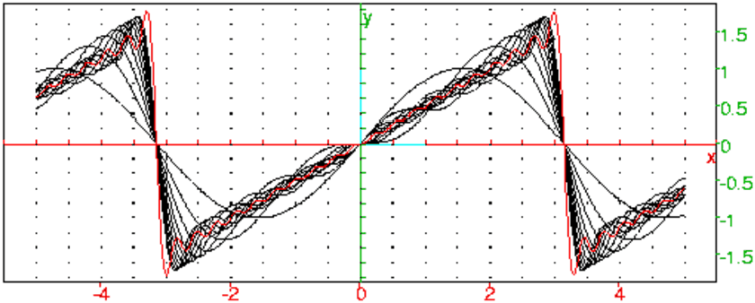
13.15.2 Développement en série de Fourier et phénomène de Gibbs
Rappels du cours
On sait que les coefficients de Fourier d’une fonction, 2π-périodique et
intégrable sur tout intervalle fermé borné, sont définis pour
n ∈ ℤ et pour α ∈ ℝ par :
et que la série de Fourier associée à f est :
On peut aussi définir les coefficients de Fourier réels pour
n ∈ ℕ et pour α ∈ ℝ par :
On a alors :
| SF(f)(x)= | | + | | (an(f)cos(nx)+bn(f)sin(nx)) |
Théorème de Dirichlet
Si au point x0, f admet une limite à droite et une limite à gauche
(que l’on note f(x0+0) et f(x0−0)) et admet une dérivée à droite,
et une dérivée à gauche, alors la série SF(f)(x0) converge vers
1/2(f(x0−0)+f(x0+0)).
En particulier si f est dérivable pour tout x, SF(f)(x) converge vers
f(x).
Développement en série de Fourier
Développer en serie de Fourier la fonction f(x) périodique de
période 2π égale à x/2 sur ]−π;π].
On tape :
assume(n,integer);fourier_bn(x/2,x,2*pi,n,-pi)
On obtient :
DOM_INT,(-((-1)^n))/n
Puisque f(x) est impaire, on sait que dans la série de Fourier de f,
les coefficients des cosinus seront nuls i.e.
fourier_an(x/2,x,2*pi,n,-pi) =0
Donc le développement en série de Fourier de f(x) est :
D’après le théorème de Dirichlet on déduit que :
| ( | | + | | )=0= | | −(−1)n | | pour x=−π ou x=π |
Le phénomène de Gibbs
Les graphes des fonctions S(x,n) pour x∈ [−π;π] possède un maximum
ayant comme coordonnées xn,yn.
Quand n tend vers +∞, on va montrer que :
xn tend vers π et
yn tend vers α=∫0πsin(t)/tdt.
Un calcul approché de α montre que α>1.85193705198> π/2.
Ces ”bosses” au voisinage du point de discontinuité s’appellent le
phénomène de Gibbs.
Observation du phénomène de Gibbs
On cherche la limite de yn=S(xn,n) quand n tend vers +∞.
Déterminer graphiquement les coordonnées xn,yn du maximum de :
S(x,n)=∑k=1n −(−1)ksin(kx)/k
pour n=1, 2, 3, 4, 5, n=20 et n=40.
On lit sur le graphique précédent fait avec Xcas:
-
x1=1.57, y1=1
- x2=2.1, y2=1.3
- x3=2.38, y3=1.44
- x4=2.53, y4=1.53
- x5=2.63, y5=1.59
- x20=3.00, y20=1.77
- x40=3.07, y40=1.80
Démonstration du phénomène de Gibbs
On cherche xn et la limite de yn=S(xn,n) quand n tend vers +∞
de façon théorique.
-
On va déterminer la valeur de xn
Pour avoir un calcul de la valeur approchée de xn, on sait que :
| S′(x,n)=s(x,n)= | | (−1)k cos(kx)= | | cos(k(x+π))= |
| (cos(x)−(−1)ncos(n*x)−(−1)ncos(x*(n+1))+1) |
|
| (2*cos(x)−2) |
| = |
| sin((2n+1)(x+π)/2)−sin((x+π)/2) |
|
| 2sin((x+π)/2) |
|
Donc
-
pour n=1, on tape :
fsolve(2*cos(x)+cos(2*x)+1=0,x,1)
On obtient : 1.57079632679 donc x1=1.57079632679
- pour n=2, on tape :
fsolve(cos(x)-cos(2*x)-cos(3*x)+1=0,x,2)
On obtient : 2.09439510239 donc x2=2.09439510239
- pour n=3, on tape :
fsolve(cos(x)+cos(3*x)+cos(4*x)+1=0,x,2)
On obtient : 2.35619449019 donc x3=2.35619449019
- pour n=4, on tape :
fsolve(cos(x)-cos(4*x)-cos(5*x)+1=0,x,2.5)
On obtient : 2.51327412287 donc x4=2.51327412287
- pour n=5, on tape :
fsolve(cos(x)+cos(5*x)+cos(6*x)+1=0,x,2.5)
On obtient : 2.61799387799 donc x5=2.61799387799
- pour n=20, on tape :
fsolve(cos(x)-cos(20*x)-cos(21*x)+1=0,x,3)
On obtient : 2.99199300342 donc x20=2.99199300342
- pour n=40, on tape :
fsolve(cos(x)-cos(40*x)-cos(41*x)+1=0,x,3.04)
On obtient : 3.06496844253 donc x40=3.06496844253
Mais cela ne donne que des valeurs approchées....Pour avoir un calcul de la valeur exacte de xn, il faut résoudre en x :
| sin((2n+1)(x+π)/2)−sin((x+π)/2)= 0 |
ou
| cos((n+1)(x+π)/2)*sin(n(x+π)/2)=0 |
ce qui donne :
(n+1)(x+π)/2)=π/2 modπ
soit
(n+1)x=−nπ mod2π donc
x=(2k−n)π/n+1 avec n/2<k<(2n+1)/2 pour avoir x∈]0;π[
et
n(x+π)/2=kπ
soit
nx=(2k−n)π donc
x=(2k−n)π/n avec n/2<k<n pour avoir x∈]0;π[
Il y a donc, pour x∈]0;π[, un nombre impair d’extremum qui ont pour
abscisse :
-
si n=1 x1=π/2≃ 1.57079632679
- si n=2 x2=2π/3≃ 2.09439510239
- si n=2p ou si n=2p+1 (pour p>2)
(p+1)π/n+1,(p+1)π/n,(p+2)π/n+1,(p+2)π/n,....(n−1)π/n+1,(n−1)π/n,nπ/n+1
On commence par un maximum et donc on finit aussi par un maximum.
Le dernier maximum a pour abscisse :
On vérifie les résultats précédent et on tape :
evalf(k*pi/(k+1))$(k=1..5)
On obtient :
1.57079632679,2.09439510239,
2.35619449019,2.51327412287,2.61799387799
Les maximum ont pour abscisse (2k−n)π/n+1 pour k=p+1...n avec p=floor(n/2)
Pour n=20 cela donne
x20=20/21≃2.99199300342
Pour n=40 cela donne
x40=40/41≃3.06496844253
- Déterminons la valeur de yn=S(xn,n)=∑k=1n−(−1)ksin(knπ/(n+1))/k
Par définition, on a :
et
On a montré que :
En intégrant cette égalité entre π et x, puisque
S(π,n)=0, on obtient :
On fait le changement de variable t=π−2u :
(t+π)/2=π−u et dt=−2du et comme sin(π−u)=sin(u) et
sin((2n+1)(π−u))=sin((2n+1)u) on a :
Puisque xn=nπ/n+1 on a :
xn−π/2=−π/2(n+1).
Donc
Exercice
Montrez que :
Pour cela on utilisera la continuité de la fonction
g définie sur [0;π[ par :
g(0)=0,
g(x)=1/sin(x)−1/x pour x∈]0;π[
et on montrera que
∫0π/2n+2sin((2n+1)t)g(t)dt tend vers zéro
quand n tend vers +∞.
Correction de l’exercice
On tape en effet :
limit(1/sin(x)-1/x,x,0)
On obtient 0
donc g est continue sur [0;π[.
Donc il existe K tel que pour tout x∈ [0;π/2] |g(x)|<K.
Puisque π/2n+2<π/2 quand n∈ ℕ, on a :
Donc
∫0π/2n+2sin((2n+1)t)(1/sin(t)−1/t)dt tend vers zéro quand n tend vers +∞.
On en déduit :
limn→ +∞yn=limn→ +∞∫0π/2n+2sin((2n+1)t)/tdt
On fait le changement de variable v=(2n+1)t donc dv/v=dt/t, donc
On tape :
romberg(sin(t)/t,t,0,pi)
On obtient :
1.85193705198
On tape :
evalf(pi/2)
On obtient :
1.57079632679
Donc
et il a une bosse puisque 1.57079632679<1.85193705198
Utilisation de la moyenne de Césaro
Définition
Soit (un)n ∈ ℕ une suite, on pose Sk=∑i=0kui.
On dit que la série ∑un converge vers σ au sens
de Césaro si la suite :
σn=1/n∑k=0n−1Sk tend vers σ.
On pose :
σn(f)=1/n∑k=0n−1SFk(f)
Théorème
σn(f)(x) converge vers f(x) en tous les points de continuité de
f.
On observe que la convergence au sens de Césaro permet de régulariser la
convergence, donc d’éliminer le phénomène de Gibbs.
Exercice
Calculer σn(f)(x) pour la fonction f
périodique de période 2 π définie par :
f(x)=x/2 sur ]−π; π]
Tracer sur un même graphique S(x,7) et σ7(f)(x) et aussi
S(x,40) et σ40(f)(x).
-
On tape :
S(x,n):=sum((-1)^(k+1)*sin(k*x)/k,k,1,n); sigma(x,n):=1/n*sum(S(x,k),k,1,n-1); plotfunc(S(x,7),x);plotfunc(sigma(x,7),x,affichage=1)
On obtient :
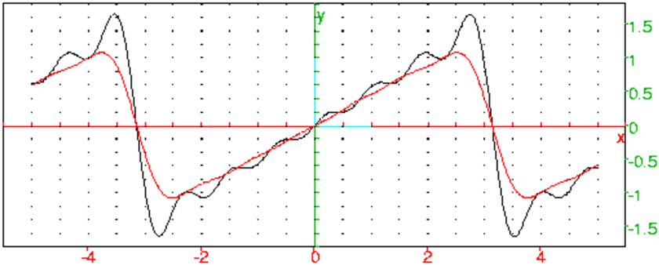
- On tape :
plotfunc(S(x,40),x); plotfunc(sigma(x,40),x,affichage=1)
On obtient :
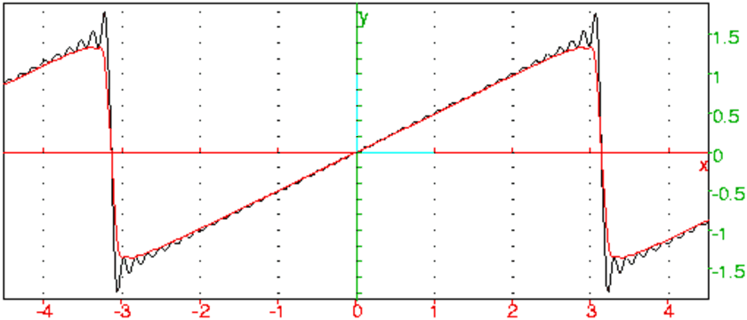
1/ Etude de la fonction f(x)= ln(1−x)/ln(x) dans
l’intervalle ]0;1[.
2/ Pour n entier strictement positif, on considère Pn(x)=xn+x−1.
Montrer que P a une racine unique an, dans l’intervalle ]0;1[.
Calculer a1,a2 puis, à l’aide de la méthde de Newton donner une valeur
approchée de a3,a4,a50,a100 à 10−10 près.
3/ Etude de la suite an.
Correction
On tape :
f(x):=log(1-x)/log(x)
plotfunc(f(x),x,0,1)
diff(f(x),x)
On obtient :
(x*log(x)-x*log(-x+1)+log(-x+1))/(x^2*(log(x))^2-x*(log(x))^2)
On tape :
lncollect(ans())
On obtient :
(x*log(x)+(-x+1)*log(-x+1))/(x^2*(log(x))^2-x*(log(x))^2)
Le numérateur et le dénominateur sont négatifs donc f est croissante.
On tape :
limit(f(x),x=1)
On obtient :
infinity
On tape :
limit(f(x),x=0)
On obtient :
0
2/ Pn(x) est croissante et continue dans l’intervalle [0;1] et on a :
P(0)=−1, P(1)=1
Il existe donc d’après le théorème des valeurs intermédiaires une
valeur an unique dans l’intervalle ]0;1[ telle que P(an)=0.
On a :
a1=1/2.
On tape :
solve(x^2+x-1,x)
On obtient :
[(-1+sqrt(5))/2,(-1-sqrt(5))/2]
donc a2=(-1+sqrt(5))/2 ≃ 0.61803398875
On définit la fonction qu’il faut itérer pour n fixé :
g(n,x):=x-(x^n+x-1)/(n*x^(n-1)+1)
puis,
h(x):=g(3,x)
h(1.0)
h(ans()).....
h(ans())
On obtient :
a3=0.682327803828
puis,
h(x):=g(4,x)
h(1.0)
h(ans())....
h(ans())
On obtient :
a4=0.686046511628
puis,
h(x):=g(50,x)
h(1.0)
h(ans())....
h(ans())
On obtient :
a50=0.943986614988
puis,
h(x):=g(100,x)
h(1.0)
h(ans())....
h(ans())
On obtient :
a100=0.966583901079
3/ On a donc :
(an)n=1−an.
On en déduit :
n*ln(an)=ln(1−an)
c’est à dire f(an)=n
Comme f est une bijection de [0;1[ sur [0;+∞[, f admet une
fonction inverse qui tend vers 1 à l’infini.
On a :
an=f−1(n)=g(n) donc, la suite an est convergente et sa limite est 1.
Retour à la page personnelle de Bernard Parisse.